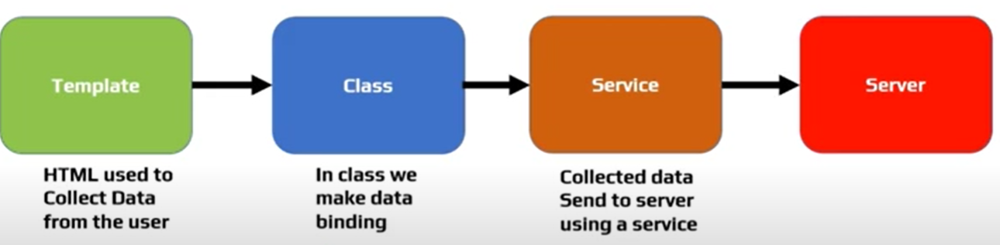

<div class="contentStyle">
    <h2 class="inTittle">ANGULAR FORMS INTRUDUCTION :</h2>
    <ul>
        <li>Forms are very important for any business application</li>
        <li>Forms are used to create an experience that guides the user efficiently and effectively through the workflow.</li>
        <li>As a developer, we have to do,</li>
    
        <li>
            <div>There are various types of route guards available.</div>
            <ul class="innerUL">
                <li>Data Binding</li>
                <li>Change Tracking</li>
                <li>Validation</li>
                <li>Visual Feedback</li>
                <li>Displaying Error Messages</li>
                <li>Form Submission</li>
            </ul>
        </li>
        
        
            
        <div class="subContent">
            <h3>Two Approaches:</h3>
        </div>
        <li>
            <ul class="innerUL">
                <li><span style="color: #c72100;background-color: #c5bdbd;">Template Driven Forms:</span> - Most of the code written in HTML file.</li>
                <li><span style="color: #c72100;background-color: #c5bdbd;">Reactive Forms / Model Driven Forms:</span> - Most of the code written in component class file.</li>
                
            </ul>
        </li>
    </ul>
</div>